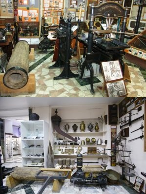

AR-музей ТИУ – первый в мире музей с дополненной реальностью.
О музее
Музей истории науки и техники Зауралья — крупнейший и единственный подобного рода музей на обширном пространстве от
Урала до Дальнего Востока, которому в 2020 г. исполнилось 55 лет. Экспозиция музея состоит из 10 разделов (10
демонстрационных залов), содержит богатейшую коллекцию
10 демонстрационных залов
Геолого-минералогический раздел
Здесь собрана крупнейшая коллекция минерального богатства Тюменской области: от гигантских кристаллов кальцита до
ювелирных камней, например малахит. Также в геолого-минералогическом зале представлена уникальная коллекция аммонитов,
возраст которых насчитывает сотни миллионов лет. Каждый образец неповторим и уникален
AR-модель

Присоединение и изучение Западной Сибири. Начало промышленного освоения Зауралья ХVI-ХIХ вв.
Здесь можно познакомиться с деятельностью научных академических экспедиций (I-я и II-я Камчатские экспедиции), известных
ученых и путешественников по исследованию Сибири В. И. Беринга (1681-1741), С. И. Челюскина (ок. 1700-после 1760), С. И.
Дежнёва (1605-1673). Материалы экспозиции расскажут о том, что Тобольская губерния, Тюмень – первый русский город
Сибири, во все времена, начиная со дня основания в 1586 году, задавала тон промышленному развитию обширного зауральского
края. Это — первое в Сибири металлургическое (1600-е годы, с. Рудное, Мангазея) и оружейное производство (нач. ХVIII
столетия, Тобольск), разработка сибирской технологии синей черепицы, не имеющей аналогов в мире (Тюмень, 1701), первое в
Сибири стекловарение в с. Коктюль (тобольские дворяне Пётр и Яков Метегоровы, 1723).
AR-модель
Д.И. Менделеев - гений и гражданин России
Одна из трех самых больших экспозиций в России. Выставка раскрывает многогранность талантов Дмитрия Менделеева.
Взаимосвязь основных направлений его деятельности представлена на логико-тематической сфере. Всего он подготовил более 5
тысяч трудов, публикаций, докладов. Наиболее крупных насчитывается 500. Дмитрий Менделеев основными достижениями считал
открытие периодической системы химических элементов, написание фундаментального учебника для студентов "Основы химии" и
работы по проблеме растворов и исследования газов. Свой вклад внес в развитие метеорологии, воздухоплавания,
кораблестроения и метрологии. Мало кто знает, что он всерьез занимался сельским хозяйством, имел опытные луга и
образцовый скотный двор. Неплохо рисовал и любил фотографировать.
Он первый из ученых мира занялся изучением состава нефти.
Все идеи, интересные страницы жизни гениального ученого отображены в экспозиции музея ТИУ.
AR-модель
Из истории информационных технологий
В этом разделе широко показана история телеграфа и телефона. В частности, демонстрируются первые телефоны А. Белла,
старинный телефон 1895 г. фирмы «Ericsson» — подобный находился на рабочем столе императора Николая II, детали первых в
России телефонных станций с автоматическим набором номера абонента. Ранний период развития телевидения показан на
примере модели малострочных телевизоров 30-х годов ХХ в. с механическим разложением строк (диск Нипкова или зеркальный
винт Оксолиани) и размером экрана в почтовую марку. Наиболее редкий в коллекции телевизоров – первый массовый телевизор
«КВН-49». Освещена история первого в Зауралье любительского и учебного телевизионного центров в г. Тюмени (1957-65 гг.).
Только здесь можно познать историю спутникового телевещания в Сибири, начиная с систем «Орбита» и «Экран», и проследить
её до первых попыток приёма телевизионного сигнала непосредственного телевещания с экваториальных спутников (1989-1990).
AR-модель
История оптики, звукозаписи, стереоскопии и кинотехники XIX-XXI вв.
Здесь показаны уникальные предметы по истории оптики: камера-обскура; коллекция старинных фотообъективов, в том числе
гигантские павильонные (конец ХIХ в.); внушительных размеров студийные фотоаппараты, один из них из Германии (конец ХIХ
в.). К раритетам оптики относятся не имеющий мировых аналогов растровый стереоэкран системы С. П. Иванова – выдающегося
научного достижения России (1940-1966 гг.), и девяти объективный проектор для наблюдения предметов без специальных
очков, стеклянные фотонегативы начала ХХ в. Обращают внимание посетителей уникальные образцы аппаратов звукового
воспроизведения: коллекция фонографов (1890-1928), музыкальных шкатулок середины ХIХ в. граммофонов, патефонов
отечественного и зарубежного производства; первых катушечных магнитофонов, различных музыкальных инструментов и многое
другое.
AR-модель
История крестьянской сельскохозяйственной и бытовой техники Западной Сибири XIX-XX вв.
Раскрывает историю маслоделия, кожевенного производства, ковроткачества, кустарных промыслов и ремёсел по переработке
древесного и растительного сырья, по изготовлению сельско-хозяйственных орудий труда и даже простейших музыкальных
инструментов.
AR-модель
История Тюменского индустриального университета
Этот раздел посвящен истории образовательной организации. В экспозиции показано, как первый вуз нефтегазового профиля в
Сибири, организованный благодаря бескорыстному энтузиазму и огромному труду его создателей, превратился в один из
базовых центров России по подготовке высококвалифицированных специалистов для топливно-энергетического комплекса и
других отраслей страны посредством внедрения новой многоступенчатой системы подготовки кадров, опирающейся на тесную
связь со школой, производством и переходом к глубокой, системной работе по наращиванию научно-инновационной
деятельности.
AR-модель
История авиации, моторо- и ракетостроения
Здесь можно ознакомиться с историей авиации, отечественной космонавтики, турбо-, моторо- и ракетостроения в крае,
сопряженным с жизнью отечества. В экспозиции показана уникальная подлинная продукция высокотехнологичного производства —
моторостроения, организованного в сложных условиях, но игравшего исключительно важную роль в укреплении
обороноспособности страны и во многом обеспеченное специалистами Тюменского машиностроительного техникума, Тюменского
индустриального института – Тюменского государственного нефтегазового университета. Подавляющее большинство
экспонируемых в зале предметов – это дары частных лиц, прежде всего выпускников вуза, кафедр
AR-модель
История открытия и освоения нефтегазовых месторождений Западной Сибири
В этом разделе уделено внимание теоретическим обоснованиям и научным концепциям происхождения нефти, становления
нефтяной промышленности в России, отражены открытие и разработка крупнейших нефтяных и газовых месторождений на
Тюменском Севере, транспортировка углеводородного сырья, героический труд первопроходцев геологов, нефтяников,
газовиков, строителей и др., а также выпускников ТИИ-ТюмГНГУ-ТИУ, активно участвовавших в освоении нефтегазовых богатств
Западной Сибири.
AR-модель
Паноптикум д.т.н., профессора В. Е. Копылова. Всемирная история электроники и фотодела
В основе выставки — личная уникальная коллекция историко-культурных ценностей научно-технического профиля В.Е. Копылова,
директора НИИ ИНТЗ, переданная безвозмездно родному вузу для развития музея, которая послужит делу подготовки
инженерно-технических кадров и их патриотическому воспитанию.
«Паноптикум» в переводе с греческого переводится как собрание различных необычных предметов. Название говорит о
разноплановости экспозиции и широте интересов Виктора Ефимовича Копылова, как коллекционера. Здесь можно увидеть
фонограф Эдисона, «карманный минипатефон», музыкальную шкатулку, фотоаппараты разных лет, стран и конструкций,
дагеротипы (старинные фотографии), бинокли, компасы, собрание специальной литературы и периодики, художественные
открытки и марки.